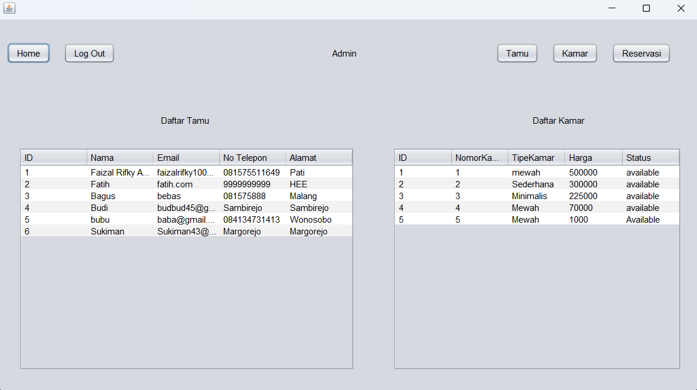
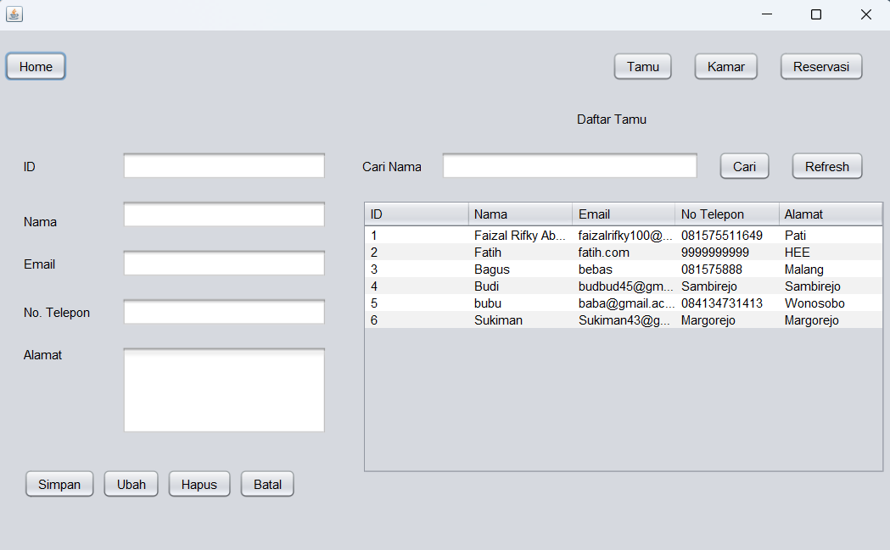
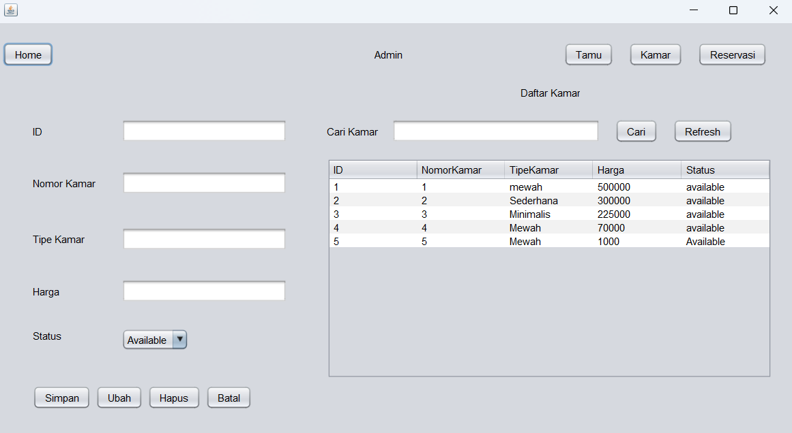
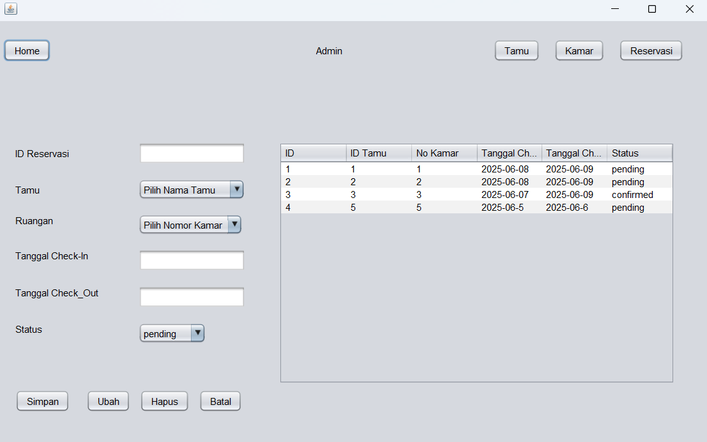

Deskripsi Proyek
Dalam proyek ini, saya bertindak sebagai Ketua Tim (Project Leader) yang mengelola 3 orang anggota. Kami membangun aplikasi desktop berbasis Java untuk manajemen reservasi hotel dengan arsitektur OOP yang solid, dan berhasil mendapatkan nilai A.
Fitur Utama & Teknis
- Implementasi arsitektur MVC (Model-View-Controller) dan pola desain DAO.
- Integrasi JDBC/MySQL untuk operasi CRUD data tamu dan kamar secara real-time.
- Custom Table Model dengan fitur pencarian data yang dinamis.
- Manajemen tugas tim berdasarkan keahlian masing-masing anggota untuk efisiensi maksimal.
Lihat Repository GitHub